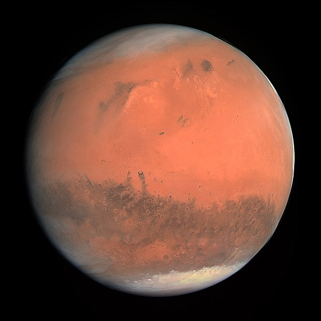

A few facts about the fourth world in our solar system, drawing on the information found in spacefacts.org

Mars is the fourth planet in our solar system and the second smallest planet in the Solar System after Mercury. In English, Mars bears the name of the Roman god of war, and is often referred to as the "Red Planet" due to the reddish iron oxide found on its surface, which gives it a reddish appearance.